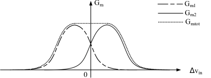

arXiv 2025
Design of a Gm-C Dynamic Amplifier with High Linearity and High Temperature and Power Supply Voltage Stability
본 논문에서는 높은 선형성과 높은 온도 및 전원 전압 안정성을 갖춘 Gm-C 동적 증폭기를 제시합니다. 증폭기의 주요 부분은 트랜스컨덕턴스 선형성을 향상시키기 위해 두 개의 비대칭 차동 쌍을 사용합니다. 증폭기는 -40mV ~ 40mV의 차동 입력 범위 내에서 거의 일정한 이득을 유지하고 70.5dB의 총 고조파 왜곡(THD)을 달성합니다. 증폭기의 바이어...
Introduction
이 논문은 무엇을 다루나요?
본 논문에서는 높은 선형성과 높은 온도 및 전원 전압 안정성을 갖춘 Gm-C 동적 증폭기를 제시합니다. 증폭기의 주요 부분은 트랜스컨덕턴스 선형성을 향상시키기 위해 두 개의 비대칭 차동 쌍을 사용합니다. 증폭기는 -40mV ~ 40mV의 차동 입력 범위 내에서 거의 일정한 이득을 유지하고 70.5dB의 총 고조파 왜곡(THD)을 달성합니다. 증폭기의 바이어스 부분은 일정한 GM 바이어스 회로를 채택하여 증폭기의 상호 컨덕턴스 및 이득의 온도와 공급 전압 안정성을 향상시킵니다. 차동 입력이 1mV일 때 전원 전압은 $\pm$10% 변동하고 온도는 -40$\mathrm{^\circ C}$에서 120$\mathrm{^\circ C}$ 사이에서 변동하며 이득 분포의 표준 편차는 262m이고 분포 범위는 15.1~16.3입니다.
Results
주요 결과
⚙ "이 논문 상세 분석해줘"라고 하면 Claude가 채워드립니다.
설계 관점에서 보면요
HBM 설계에 어떻게 적용할 수 있나요?
⚙ "이 논문 상세 분석해줘"라고 하면 Claude가 채워드립니다.
논문 그림
Figure 갤러리

Figure 1: G m − Δ V in G_{\mathrm{m}}-\Delta V_{\mathrm{in}} curve of symmetric differential pair.
Figure 2: Asymmetric differential pair.

Figure 3: G m − Δ V in G_{\mathrm{m}}-\Delta V_{\mathrm{in}} curve of asymmetric differential pair.

Figure 4: Composite differential pair.

Figure 5: G m − Δ V in G_{\mathrm{m}}-\Delta V_{\mathrm{in}} curve of the composite differential pair.